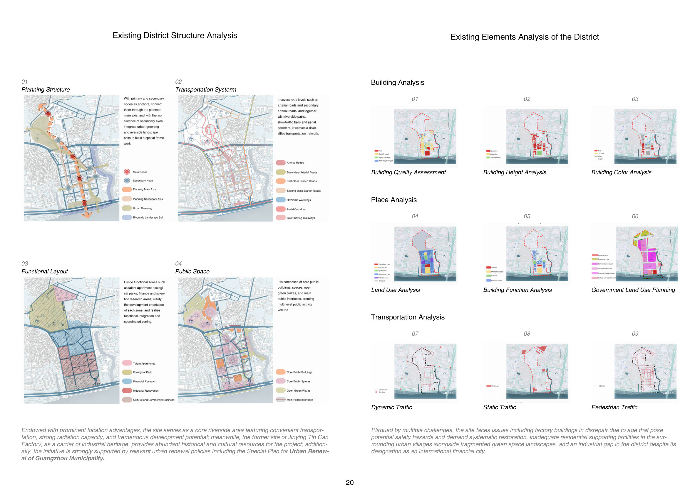
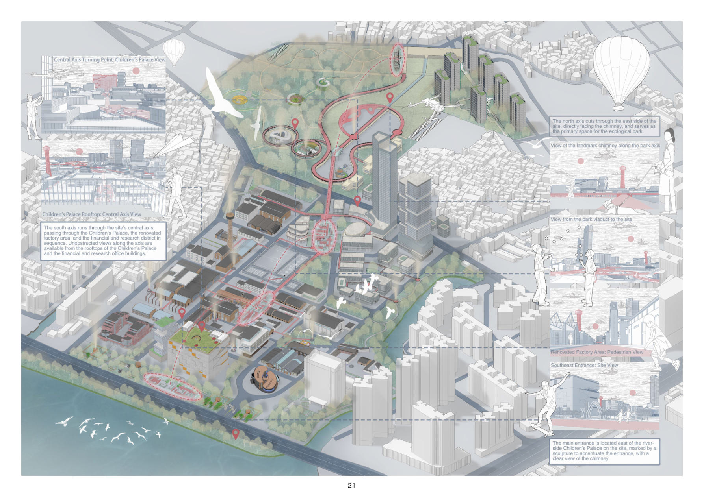

两轮问卷把规划从"一次性蓝图"改成"持续反馈"，多准则分析把多方约束整合成一份可执行的整体规划。
一片同时承载产业遗产与滨水生态的待规划用地。我没有直接出图，而是先问、再评、后定——把规划做成需求锚定 → 多准则评估 → 证据化取舍的闭环。
项目位于广州天河区东南门户，紧邻珠江新城 CBD 与琶洲会展，基地紧靠红砖厂产业遗产滨水带，叠加"工业遗产文化 + 滨水生态景观"双重优势。目标：在区域发展、居民需求、生态底线之间做整体规划，而非单向的"蓝图输出"。
规划的直接利益相关方：周边居民（生活、通勤、公共空间）、通勤与就业人群（交通与产业导入）、城市管理部门（用地与开发强度约束）。
问题：现状需求到底是什么？方案推出后有没有真的解决？——只做一次调研只能回答前者，回答不了后者。
方法论闭环：用户研究（两轮线上问卷，共回收 100 份：规划前需求锚定 + 规划后成效验证）→ 多准则评估（交通 / 用地 / 建筑质量等）→ 数据与证据化取舍 → 落地产出。
交付一份覆盖片区结构、要素分析、交通与用地策略的整体规划方案与图纸（片区结构图、要素分析图、规划总图），并建立了"规划后复测"的反馈机制——方案是开放给下一轮数据更新的，而不是一次性定稿。
主导问卷设计、实施与多准则分析，把需求数据转化为规划决策依据；参与片区结构与方案整合。
复盘：两轮问卷的"事前锚定 + 事后验证"是最有价值的部分——它让方案具备产品式的迭代能力。下次会做：把准则评估做成可复算的加权模型，并把问卷回收量等数字补进简历。

